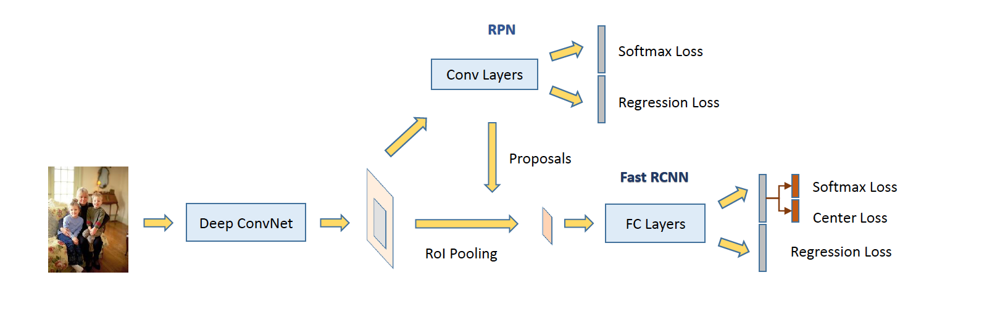
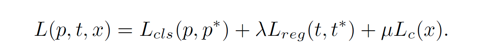
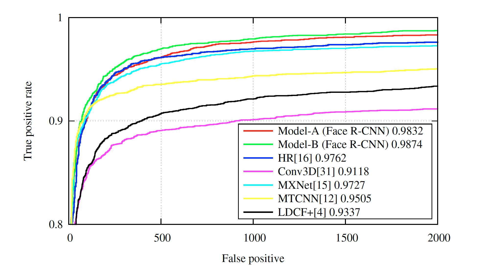

Face R-CNN
URL:https://arxiv.org/abs/1706.01061
腾讯AI Lab发表在CVPR2017上面的论文，在2017年可以做到FDDB 和 Wider Face数据集上面的最好结果，Face R-CNN是基于Faster R-CNN框架的模型，基本结构论文给出了比较详细的示意图：

模型主要有以下几个关键点：
- Center Loss：论文直接把人脸识别中的center loss沿用到人脸检测中来，出发点还是一样利用Softmax Loss来扩大类间差异，利用Center Loss来减小类间差异，以此来增强模型的鲁棒性，只是在人脸检测中类别总数只有2，人脸和非人脸。

因此模型最终的Loss就变成了cls loss + reg loss + center loss：
 - OHEM：利用标准的OHEM做法，以loss作为key排序取Top N作为hard example，作者特别说明使用Center Loss可以有效的控制hard example中的postive和negative的样本数。在最后实现的时候是分别在postive和negative样本上应用OHEM并且控制每个batch两者的比例为1:1.
- Multi-Scale Training：这一步其实就是把图片resize成不同的大小进行训练来覆盖不同分辨率……
最后实验的结果：

论文整体感觉更偏工程化，通过不断尝试融合现有的方法提高模型在数据集上的表现，没有很特别的地方。
本博客所有文章除特别声明外，均采用 CC BY-NC-SA 4.0 许可协议。转载请注明来自 Out of Memory！